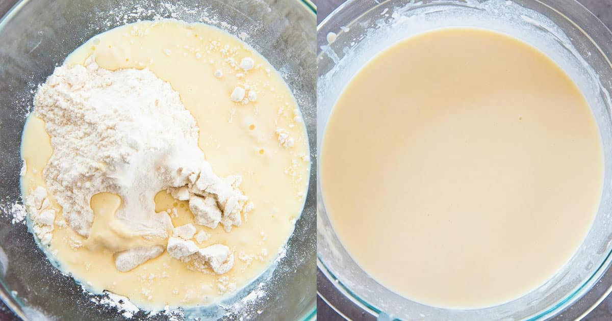
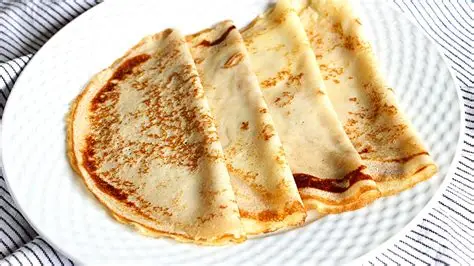

El primer que farem serà barrejar tots los ingredients en un vol

Deixem enfredir la massa a la nevera mitja hora
Agafem una cullereada gran de massa i la posem a una paella calentada previament, pasada una estona, li donem un tom i esperarem el mateix temps

Dsifruta